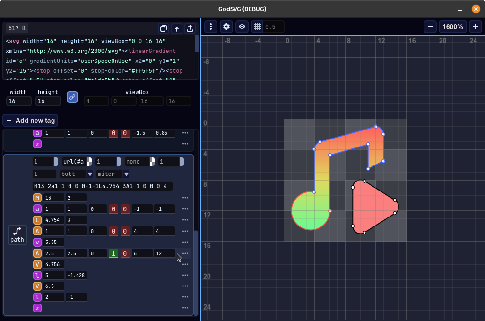

On the internet, e.g. Github, I go by Mew Pur Pur. This is a set of my main personal projects and undertakings.
В интернет, напр. Github, минавам с името Mew Pur Pur. Този сайт е компилация от личните ми проекти и начинания.
Aeropelago
A game project in early development.
Игра в ранен етап на разработване.
Embark on an thrilling journey through the sky archipelago! Traverse through hundreds of hand-made stages and learn about the secrets of the isles in this super tight platformer - or build your own adventure inside the level editor!
Тръгни на вълнуващо приключение през небесният архипелаг! Пътувай през стотици ръчно направени стаи и научи тайните на островите във този супер стегнат платформър - или създай свое собствено приключение в редактора на нива!
GodSVG
A SVG editor in very early development.
Редактор на SVG файлове в много ранен етап на разработване.
Unlike most SVG editors, which focus on powerful features for artists, GodSVG's target users are programmers looking to create optimized vector graphics. The app also aims to support mobile devices.
За разлика от повечето редактори на SVG файлове, които се фокусират върху мощни функции за артисти, GodSVG е насочен към програмисти, които целят да създават оптимизирани векторни графики. Приложението също цели да поддържа мобилни устройства.
GodSVG is, and always will be, free and open source. Check out the GodSVG repository.
GodSVG е, и винаги ще бъде, безплатен и с отворен код. Разгледайте в репозиторията на GodSVG.
Open-source contributions
Приноси към отворен код
I have made a number of meaningful contributions to Godot Engine. Below are the ones I am most proud of:
Направил съм няколко значителни приноса към Godot Engine. Отдолу са тези, от които съм най-горд:
Overhauling the Curve and Gradient Editors
Преработка на редакторите на Curve и Gradient
I reworked Godot's Curve and Gradient editors to significantly improve their usability in pull requests #74959 and #71915.
Преработих редакторите на ресурсите Curve и Gradient за да подобря значително колко удобно може да се използват в PRs #74959 и #71915.

SVG icons and optimizations
SVG иконки и оптимизации.
I have created dozens of icons for Godot, for example in pull requests #77376, #78903, and many more. I also went through all SVG files used by the engine, manually optimizing and fixing them up, reducing the total file size by more than half - even though the SVGs had been optimized in advance.
Създал съм десетки иконки за Godot, например в PRs #77376, #78903 и много други. Освен това, аз оптимизирах и поправих SVG файловете използвани от Godot дотолкова, че намалих общият им размер наполовина - въпреки че те вече бяха оптимизирани предварително.